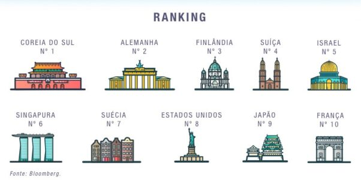
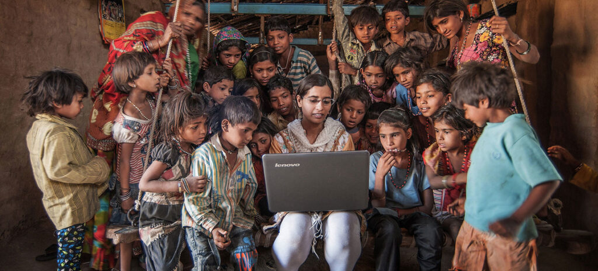

|
Estatísticas |
|
|
Uma pesquisa realizada pela empresa Bloomberg desenvolveu o Índice mundial de Inovação 2019, revelando os países mais
inovadores do mundo. O estudo levou em consideração diversos fatores relacionados aos 3 “is” do nono ODS: investimento
em pesquisa e desenvolvimento, valor agregado na indústria, densidade de empresas públicas de alta tecnologia,
investimento na educação superior, registro de patentes, produtividade e concentração de pesquisadores.
Em primeiro lugar no ranking está a Coreia do Sul, seguida pela Alemanha e, logo após, a Finlândia, completando o pódio.
Veja os 10 primeiros colocados na imagem a seguir:
|
|
|
 |
|
Olhando assim, dá para perceber que há algo em comum entre essas nações, não é mesmo? Considerados países desenvolvidos,
todos eles possuem também um alto índice de Desenvolvimento Humano (IDH). São locais muito ricos, com dinheiro e capacidade
para investir em pesquisas e criação de novas indústrias e tecnologias. Enquanto a inovação chega cada vez mais rápido para países assim,
outros locais pelo globo continuam batalhando para conseguir promover um acesso justo e democrático às mais simples formas de tecnologias.
|
|
|
|
• O outro lado da moeda
Mais de quatro bilhões de pessoas ainda não têm acesso à internet, e a grande maioria delas vive em países em
desenvolvimento. Segundo um relatório da ONU, publicado em 2020, quase 87% da população de países desenvolvidos possui
acesso à Internet, contra apenas 19% nos países em desenvolvimento. Como regiões onde menos de 20% poderiam conseguir
realizar os mesmos investimentos em Indústria, inovação e infraestrutura que países onde quase 90% da população está
conectada?
Essa defasagem que já é grande, tende a aumentar ainda mais, porque os países mais pobres acabam se tornando
dependentes dos avanços econômicos e tecnológicos das regiões mais ricas e desenvolvidas. Países subdesenvolvidos
sofrem uma forte influência de empresas multinacionais, que acabam sendo seus os principais centros produtivos.
Porém, as empresas estrangeiras, têm pouco interesse em promover o desenvolvimento tecnológico do local
onde estão instaladas suas filiais: elas buscam atender seus próprios interesses. Além disso, o lucro de suas atividades
não permanece no país, pois migra para a nação sede, elevando cada vez mais sua economia e aumentando ainda mais a
desigualdade entre as nações.
|
|

| |